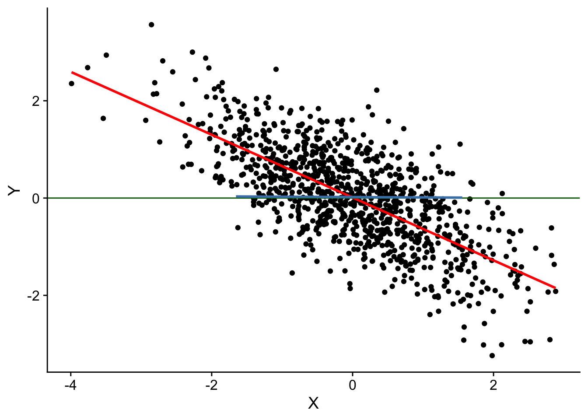
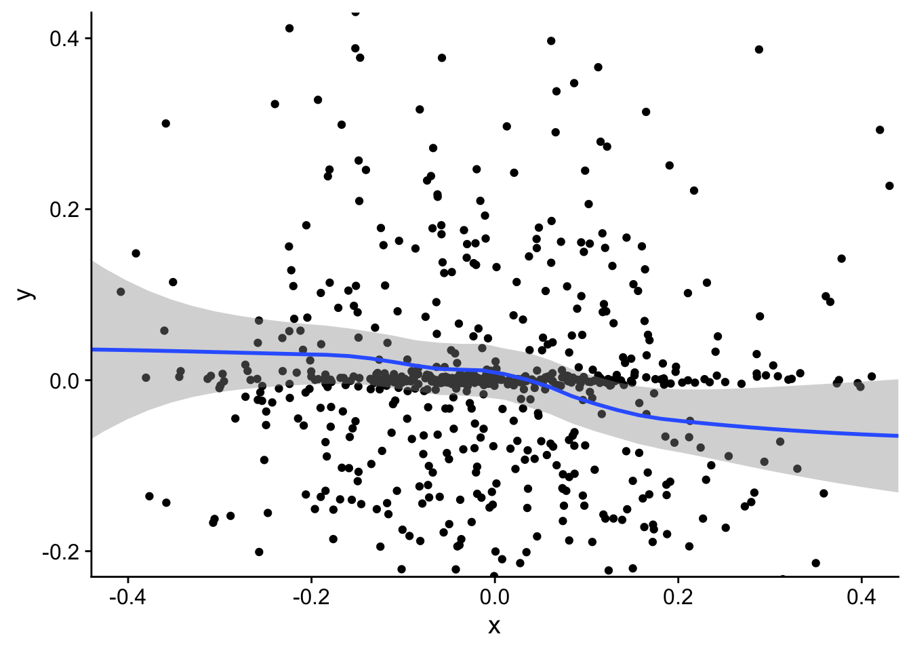

6 set ‘familiar’ seed for all other algorithms and weight types
7 IV-Regression
Wie in Kapitel Kapitel 3 erläutert, können Regressionsmodelle unter Endogenitätsproblemen leiden: Der Fehlerterm in unserem Regressionsmodell ist mit dem/den interessierenden Regressor(en) korreliert, sodass der zugehörige Koeffizient inkonsistent geschätzt wird und damit nicht als kausaler Effekt interpretiert werden darf. Die häufigsten Ursachen für Endogenität, die in empirischen Anwendungen auftreten, sind ausgelassene Variablen, Messfehler und simultane Kausalität.
Durch Hinzufügen potenziell relevanter Variablen in die Regression kann das Risiko einer verzerrten Schätzung des interessierenden kausalen Effekts anhand multipler Regression verringert werden. Wenn jedoch wichtige ausgelassene Variablen unbeobachtbar (U) sind oder aus anderen Gründen nicht zur Verfügung stehen, kann multiple Regression die Endogenität nicht beheben. Diese Problematik ergibt sich insbesondere bei simultaner Kausalität: Wenn die Kausalität von der Behandlungsvariable (B) zur Outcomevariable (Y) und umgekehrt verläuft, gibt es Backdoors, die nicht durch das Hinzufügen von Kontrollvariablen zum Regressionsmodell geschlossen werden können.
Eine allgemeinere Technik, um Backdoors aufgrund unbeobachtbarer Variablen zu schließen, ist die Regression mit Instrumentvariablen (IV). Bei IV-Regression wird exogene Variation in einer Instrumentvariablen (Z) verwendet, um den Teil der Variation in der Behandlungsvariable zu isolieren, der nicht durch unbeobachtbare Faktoren verursacht wird, die sowohl B als auch Y beeinflussion. Der kausale Effekt von B auf Y wird dann anhand dieser exogene Variation in B geschätzt. Ein Forschungsdesign, in dem der kausale Effekt von B auf Y mit IV-Regression geschätzt werden kann, ist in Abbildung 7.1 dargestellt.
7.1 Der einfache lineare IV-Schätzer
Im folgenden nehmen wir an, dass sämtliche Zusammenhänge linear sind. Zunächst betrachten wir das einfache Regressionsmodell
\[\begin{align} Y_i = \beta_0 + \beta_1 B_i + u_i \ \ , \ \ i=1,\dots,n, \label{eq:simpleiv} \end{align}\]
wobei der Fehlerterm \(u_i\) mit dem Regressor \(B_i\) korreliert ist (d.h. \(B\) ist ein endogener Regressor), sodass der KQ-Schätzer für den kausalen Effekt \(\beta_1\) inkonsistent ist.
Damit \(Z\) ein gültiges Instrument für \(B\) in dem in Abbildung 7.1 gezeigten Forschungsdesign ist, müssen die folgenden Bedingungen erfüllt sein:
Sei \(\text{Cov}(A,B)\) die Kovarianz zwischen den Variablen \(A\) und \(B\). \(Z\) muss zwei Bedingungen erfüllen, um ein gültiges Instrument zu sein:
-
1. Relevanz des Instruments für die endogene Variable
\(B\) und \(Z\) müssen korreliert sein (Pfeil von Z nach B in Abbildung 7.1): \[\begin{align} \text{Cov}(B,Z) \neq 0 \label{eq:ivassum1} \end{align}\]
-
2. Exogenität des Instruments hinsichtlich der Outcome-Variable
Das Instrument \(Z\) darf nicht mit dem Fehlerterm \(u\) in der Modellgleichung \(\eqref{eq:simpleiv}\) korreliert sein (keine Pfade von Z nach Y außer durch B in Abbildung 7.1): \[\begin{align} \text{Cov}(Z,u) = 0 \label{eq:ivassum2} \end{align}\]
Unter diesen Annahmen erlaubt das Forschungsdesign die Anwendung des einfachsten IV-Ansatzes, wobei eine endogene Variable \(B\) durch eine Instrumentvariable \(Z\) instrumentiert wird. Die folgende Umformung zeigt, warum der kausale Effekt von B auf Y anhand der (Ko)Variation in diesen Variablen identifiziert werden kann:
\[\begin{alignat*}{2} \textup{Cov}(Z,Y) &= \textup{Cov}(Z,\beta_0 + \beta_1 B + u) &\quad& \text{(Gl. \eqref{eq:simpleiv})} \\ \\ \textup{Cov}(Z,Y) &= \textup{Cov}(Z, \beta_1 B + u) &\quad& \text{($\beta_0$ konstant)} \\ \\ \textup{Cov}(Z,Y) &= \beta_1\textup{Cov}(Z,B) &\quad& \text{($\beta_1$ konstant, $Z$ exogen)} \\ \\ \beta_1 &= \frac{\textup{Cov}(Z,Y) }{\textup{Cov}(Z,B)} &\quad& \text{($Z$ relevant)} \end{alignat*}\]
Eine naheliegende Implementierung gemäß dieses Identifikationsprinzips ist der einfache IV-Schätzer
\[\begin{align} \widehat{\beta}_{\textup{IV}} = \frac{\widehat{\textup{Cov}}(Z,Y) }{\widehat{\textup{Cov}}(Z,B)}, \label{eq:simpleivest} \end{align}\]
wobei lediglich die Kovarianzfunktion \(\textup{Cov}(\cdot,\cdot)\) durch ihr Stichprobenäquivalent \(\widehat{\textup{Cov}}(\cdot,\cdot)\) ersetzt wird.
Erwartungswert und Konsistenz
Eine hilfreiche Darstellung von \(\eqref{eq:simpleivest}\) ist
\[\begin{align*} \widehat{\beta}_\textup{IV} = \beta_1 + \frac{\sum_{i=1}^n (Z_i-\overline Z) u_i}{\sum_{i=1}^n (Z_i - \overline{Z})B_i}. \end{align*}\]
Anhand dieser Form kann der Erwartungswert sowie das Verhalten für große Stichproben untersucht werden. Eine wichtige Eigenschaft ist
\[\begin{align} \textup{E}\big(\widehat{\beta}_\textup{IV}\big) = \beta_1 + \underbrace{\textup{E}\bigg(\frac{\sum_{i=1}^n (Z_i-\overline Z) u_i}{\sum_{i=1}^n (Z_i - \overline{Z})B_i}\bigg)}_{\neq0},\label{eq:ivbiasterm} \end{align}\]
sodass \(\widehat{\beta}_\textup{IV}\) bei Endogenität von \(X\) ein verzerrter Schätzer von \(\beta_1\) ist.1 Glücklicherweise kann man zeigen, dass
1 Beachte, dass der endogene Regressor \(B_i\) mit \(u_i\) korreliert, sodass der Erwartungswert des Bruchs in \(\eqref{eq:ivbiasterm}\) ungleich \(0\) ist.
\[\begin{align*} \frac{\sum_{i=1}^n (Z_i-\overline Z) u_i}{\sum_{i=1}^n (Z_i - \overline{Z})B_i}\to 0 \quad \text{für} \quad n\to\infty \end{align*}\]
bei Gültigkeit der IV-Annahmen \(\eqref{eq:ivassum1}\) und \(\eqref{eq:ivassum2}\), d.h. \(\widehat{\beta}_\textup{IV}\) ist ein konsistener Schätzer für \(\beta_1\),
\[\begin{align*} \widehat{\beta}_\textup{IV} \to \beta_1 \quad \text{für} \quad n\to\infty. \end{align*}\]
Schwache Instrumente
Beachte, dass die Annahme der Relevanz des Instruments für die Herleitung des Identifikationsprinzips und des Schätzers \(\eqref{eq:simpleivest}\) von entscheidender Bedeutung ist: Sind \(Z\) und \(B\) unkorreliert, so ist \(\text{Cov}(B,Z) = 0\) und \(\beta_1\) damit nicht identifizierbar. Weiterhin würde \(\widehat{\text{Cov}}(B,Z)\to0\) wenn \(n\to\infty\), sodass \(\widehat{\beta}_{\textup{IV}}\to\infty\)!
In empirischen Anwendungen ist \(\text{Cov}(B,Z) = 0\) unwahrscheinlich. Die Kovarianz von \(B\) und \(Z\) kann jedoch gering sein. In diesem Fall bezeichnet man \(Z\) als ein schwaches Instrument. Anhand von Gleichung \(\eqref{eq:simpleivest}\) können wir die Konsequenzen der Verwendung eines schachen Instruments ableiten: Ein sehr schwacher linearer Zusammenhang von \(B\) und \(Z\) — und damit tendenziell \(\widehat{\text{Cov}}(B,Z) \approx 0\) — kann trotz Relevanz von \(Z\) zu einem Schätzer mit großer Varianz führen.
Die Relevanz eines Instruments kann mit einem Hypothesentests geprüft werden. Wie die “Stärke” eines Instruments beurteilt werden sollte, ist eine nicht-triviale Frage. Wir betrachten diesen Aspekt näher in Kapitel 7.2.
7.1.1 Identifizierbarer Behandlungseffekt
Regression ermöglicht in der Regel die Schätzung eines durchschnittlichen Behandlungseffekts (ATE) für eine betrachtete Population mit heterogenen Behandlungseffekten (in Modell \(\eqref{eq:simpleiv}\) unterstellen wir den empirisch unwahrscheinlichen Fall eines einheitlichen kausalen Effekts \(\beta_1\)). Das Adjustieren für Endogenität mit IV-Regression hat hier einen Preis: Beachte, dass im IV-Design ein Teil der beobachteten Variation der Behandlungsvariable \(B\) (wie in \(\eqref{eq:simpleiv}\) angenommen) endogen ist und wir den Effekt von \(B\) auf \(Y\) anhand der exogenen Variation eines validen Instruments \(Z\) schätzen. Daher können wir grundsätzlich nur einen lokalen durchschnittlichen Behandlungseffekt (LATE) identifizieren: Der LATE ist eine gewichtete Variante des ATE, wobei Beobachtungen, deren Behandlung gut durch \(Z\) erklärt wird den größten Einfluss haben.2
2 Siehe Kapitel 10 und 19 in Huntington-Klein (2021) für nicht-technische Erläuterungen und Beispiel zu LATE.
7.2 2SLS-Verfahren
Der einfache IV-Schätzer \(\eqref{eq:simpleivest}\) ist ein Spezialfall eines allgemeineren Regressionsverfahrens, das in zwei Schritten Durchgeführt wird. Im fall von Modell \(\eqref{eq:simpleiv}\) erfolgt die Schätzung anhand der folgenden einfachen Regressionen:
-
1. Stufe: Regression von \(B\) auf \(Z\)
Regressiere die endogene Variable \(B\) auf das Instrument \(Z\): \[\begin{align} B_i = \alpha_0 + \alpha_1 Z_i + u_i, \quad 1,\dots,n. \end{align}\] Berechne die geschätzten Werte \[\begin{align} \widehat{B}_i = \widehat{\alpha}_0 + \widehat{\alpha}_1 Z_i. \end{align}\]
Die \(\widehat{B}_i\) aus dieser Regression sind “bereinigt”: Die Variation in den \(\widehat{B}_i\) wird lediglich durch die exogene Variation in \(Z\) verursacht.
-
2. Stufe: Regression von \(Y\) auf \(\widehat{B}\)
Regressiere die Beobachtungen der abhängigen Variable \(Y_i\) auf die geschätzten Werte \(\widehat{B}_i\) aus der 1. Stufe: \[\begin{align} Y_i = \gamma_0 + \gamma_1 \widehat{B}_i + e_i. \end{align}\] Der geschätzte Koeffizient \(\widehat{\gamma}_1\) aus dieser Regression ist der Two-Stage-Least-Squares-Schätzer (2SLS-Schätzer) von \(\beta_1\).
7.2.1 Äquivalenz von 2SLS und einfacher IV-Schätzer
Der KQ-Schätzer von \(\gamma_1\) in der 2. Stufe ist \[\begin{align} \widehat{\gamma}_1 = \frac{\sum (\widehat{B}_i - \overline{\widehat{B}})(Y_i - \bar{Y})}{\sum (\widehat{B}_i - \bar{\widehat{B}})^2} = \frac{\widehat{\text{Cov}}(\widehat{B}, Y)}{\widehat{\textup{Var}}(\widehat{B}_i)}. \end{align}\] Da \(\widehat{B}_i = \widehat{\alpha}_0 + \widehat{\alpha}_1 Z_i\), die angepassten Werte aus der 1. Stufe, eine lineare Funktion von \(Z_i\) sind, können wir \(\widehat{\text{Cov}}(\widehat{B}, Y)\) wie folgt schreiben: \[\begin{align} \widehat{\text{Cov}}(\widehat{B}, Y) = \widehat{\alpha}_1 \widehat{\text{Cov}}(Z, Y) \end{align}\] Eine ähnliche Umformung zeigt, dass \[\begin{align} \widehat{\text{Var}}(\widehat{B}) = \widehat{\alpha}_1^2 \widehat{\text{Var}}(Z). \end{align}\]
Kombinieren wir diese Ergebnisse, erhalten wir folgende Darstellung für den KQ-Schätzer von \(\gamma_1\) in der 2. Stufe: \[\begin{align} \widehat{\gamma}_1 = \frac{\widehat{\text{Cov}}(\widehat{B}, Y)}{\widehat{\text{Var}}(\widehat{B})} = \frac{\widehat{\alpha}_1 \widehat{\text{Cov}}(Z, Y)}{\widehat{\alpha}_1^2 \widehat{\text{Var}}(Z)} = \frac{\widehat{\text{Cov}}(Z, Y)}{\widehat{\alpha}_1 \widehat{\text{Var}}(Z)} \end{align}\]
Der KQ-Schätzer von \(\widehat{\alpha}_1\) in der 1. Stufe ist definiert als \(\widehat{\alpha}_1 = \frac{\widehat{\text{Cov}}(Z, B)}{\widehat{\text{Var}}(Z)}\). Somit gilt \[\begin{align} \widehat{\gamma}_1 = \frac{\widehat{\text{Cov}}(Z, Y)}{\frac{\widehat{\text{Cov}}(Z, B)}{\widehat{\text{Var}}(Z)} \widehat{\text{Var}}(Z)} = \frac{\widehat{\text{Cov}}(Z, Y)}{\widehat{\text{Cov}}(Z, B)} = \widehat{\beta}_{\textup{IV}}.\label{eq:equiviv} \end{align}\]
7.2.2 Wozu 2SLS?
In der Praxis werden IV-Schätzungen mit statistischer Software häufig anhand einer Implementierung des 2SLS-Verfahren durchgeführt. Gründe hierfür sind:
-
Bedingte Exogenität. Für den in Abbildung 7.1 dargestellten DGP ist die Exogenität von Z gegeben. In empirischen Anwendungen kann es jedoch schwierig sein, ein Instrument Z zu finden, dass plausibel nur mit dem endogenen Regressor korreliert. Eine schwächere Bedingung als Exogenität ist Exogenität nach Kontrolle für beobachtbare gemeinsame Determinanten (X) von Z und Y.3
Diese Situation ist in Abbildung 7.2 dargestellt: Aufgrund der Pfeile von X zu Z und Y ist die Bedingung \(\eqref{eq:ivassum2}\) verletzt. Durch Kontrolle für X in beiden Regressionen des 2SLS-Verfahrens können die Pfade durch X geschlossen werden.
Mehrere endogene Variablen / Instrumente. Der 2SLS-Ansatz kann leicht für mehrere endogene Variablen (und mehrere Instrumentvariablen) erweitert werden. Für jede der endogenen Variablen erfolgt hierbei eine separate Regression in der ersten Stufe des 2SLS-Verfahrens, wobei jeweils mehrere Instrumente verwendet werden und zusätzlich für beobachtbare Kovariablen X kontrolliert werden kann.
-
Statistische Inferenz. Die Berechnung von \(\widehat{\beta}_\textup{IV}\) erfordert Sorgfalt bei der Konstruktion von Inferenzstatistiken. Die in Kapitel 7.2.1 gezeigte Äquivalenz impliziert, dass wir bei der Schätzung der Variabilität von \(\widehat{\beta}_\textup{IV}\) die Unsicherheit aus den beiden KQ-Schätzungen des 2SLS-Verfahrens berücksichtigen müssen. Korrigierte Standardfehlerformeln können vergleichsweise einfach anhand der Regressionsdarstellung hergeleitet werden und sind statistischer Software implementiert (bspw.
ivregin R).Weiterhin ermöglicht das Regressions-Framework diagnostische Tests. So kann die Relevanz von Instrumenten anhand von F-Tests für die Koeffizienten in den Regressionen der ersten Stufe des 2SLS-Verfahrens überprüft werden. Sofern mehr Instrumente als endogene Variablen vorliegen, kann die Exogenität der Instrumente getestet werden.
3 Formal: \(\textup{Cov}(Z,u\vert X) = 0\).
7.2.3 Interaktive Illustrationen: 2SLS-Verfahren
Der DGP im nachfolgenden interaktiven Beispiel ist
\[\begin{align} \begin{split} X_i =&\, \gamma \cdot Z_i + v_i,\\ Y_i =&\, \beta_1 \cdot X_i + u_i, \end{split} \label{eq:OJSIVDGP} \end{align}\] wobei \(Z_i \sim N(0, .25^2)\). Die Fehlerterme \(v_i\) und \(u_i\) sind \(N(0,1)\)-verteilt und folgen einer gemeinsam Normalverteilung mit Korrelationsparameter \(\rho\), \[\begin{align} \begin{pmatrix} v_i \\ u_i \end{pmatrix} \sim N \bigg[ \begin{pmatrix} 0 \\ 0 \end{pmatrix} \begin{pmatrix} 1 & \rho \\ \rho & 1 \end{pmatrix} \bigg]. \end{align}\]
Wir sind daran interessiert, den Parameter \(\beta_1\) zu schätzen, um den Effekt von \(X\) auf \(Y\) zu bestimmen, wobei wir \(n=1000\) Beobachtungen von \((X_i, Y_i, Z_i)\) verwenden.
Beachte, dass \(X_i\) eine Funktion der (exogenen) Variable \(Z_i\) und des Fehlerterms \(v_i\) ist. Wenn die Fehlerterme \((v_i, u_i)’\) im DGP \(\eqref{eq:OJSIVDGP}\) korreliert sind (\(\rho\neq0\)), dann besteht Korrelation zwischen \(X_i\) und \(u_i\). Dies impliziert, dass \(X\) ein endogener Regressor im “naiven” Regressionsmodell \[\begin{align} Y_i = \beta_0 + \beta_1 X_i + e_i, \quad i = 1,\dots,N. \end{align}\] Der KQ-Schätzer von \(\beta_1\) ist dann verzerrt und inkonsistent.
Wenn \(Z\) Erklärungskraft für \(X\) hat, d.h. \(\gamma\neq0\) mit \(|\gamma|\) nicht zu klein gewählt ist (\(Z\) ist relevant), und \(Z\) nur über \(X\) auf \(Y\) wirkt (\(Z\) ist exogen in der Gleichung von \(Y_i\)), dann kann der kausale Effekt von \(X\) auf \(Y\) anhand einer Instrumentvariablen-Regression mit \(Z\) konsistent geschätzt werden.
Die folgende Interaktive Grafik berechnet den 2SLS-Schätzer Analog zu der in Kapitel 7.2 erläuterten Vorgehensweise:
-
Schätze das Regressionsmodell
\[\begin{align} X_i = \alpha_0 + \alpha_1 \cdot Z_i + \epsilon_i \end{align}\] und berechnen Sie die angepassten Werte \(\widehat{X}_i\). Dieser Schritt isoliert die exogene Variation in \(X_i\), die auf \(Z_i\) zurückzuführen ist.
-
Schätze den Effekt von \(X\) auf \(Y\) unter Verwendung von \(\widehat{X}_i\), dem exogenen Teil von \(X_i\) aus 1., in der Regression
\[\begin{align} Y_i = \delta_0 + \delta_1 \cdot \widehat{X}_i + \varepsilon_i. \end{align}\] Der KQ-Schätzer \(\widehat{\delta}_1\) von \(\delta_1\) ist der 2SLS-Schätzer von \(\beta_1\).
Die Grafik illustriert das Verhalten des IV-Schätzers (lila Grade) im Vergleich zum KQ-Schätzer (gestrichelte Grade) und zum wahren Zusammenhang (grüne Grade) für eine simulierte Stichprobe (gegeben der gewählten Parameter) anhand der geschätzten Regressionslinien. Die voreingestellten Parameter-Kombinationen zeigen
- die Verzerrung von 2SLS, wenn \(Z\) ein schwaches Instrument für \(X\) ist,
- eine Situation in der \(X\) exogen ist (KQ ist unverzerrt), was zu vergleichbaren Schätzungen führt (sofern \(Z\) kein Schwaches Instrument ist)
- eine starke Verzerrung von KQ, wenn \(X\) endogen und irrelevant (\(\beta_1 = 0\)) ist.
Anhand der obigen interaktiven Grafik lässt sich zwar die Verzerrung der Schätzer einschätzen, jedoch nicht die Unsicherheit der Schätzung. Um die gesamte Verteilung der Schätzer in endlichen Stichproben zu illustrieren, zeigt die nachstehende Grafik Kerndichteschätzungen basierend auf \(N\) simulierte Stichproben der Größe \(n\) für den gewählten DGP.4 Die Applikation gibt weiterhin den R-Code für eine Simulation der Daten gemäß der gewählten Parameter aus.
4 Beachte, dass die Simulation insbesondere für große \(N\) und \(n\) einige Sekunden dauern kann (grauer Balken am linken Rand zeigt laufende Berechnung an).
Die voreingestellten Parameter-Kombinationen zeigen:
Wenn \(Z\) ein schwaches Instrument ist, kann der IV-Schätzer auch in großen Stichproben eine hohe Verzerrung haben und eine deutlich größere Varianz als der KQ-Schätzer haben.
Wenn der interessierende Regressor (Behandlungsvariable) \(X\) exogen ist, hat der IV-Schätzer eine größere Varianz als der KQ-Schätzer.
Wenn die Endogenität von \(X\) “stark” ist (d.h. hohe Korrelation von \(u\) und \(v\)), kann der IV-Schätzer auch in kleinen Stichproben hilfreich sein sofern das Instrument \(Z\) nicht zu schwach ist: IV hat dann eine deutlich geringere Verzerrung als KQ, aber eine größere Varianz.
7.2.4 Schätzung mit R
library(faux) # install.packages("faux")
set.seed(1234)
n <- 1000
errors <- rnorm_multi(
n, mu = c(0, 0), sd = c(1, 1),
r = -0.8, varnames = c("u", "v"),
)
Z <- rnorm(n, sd = .25)
X <- 2 * Z + errors$v
Y <- 0 * X + errors$u
the_data <- data.frame(X, Y)library(cowplot)
the_data %>%
mutate(Xhat = lm(X ~ Z)$fitted) %>%
ggplot(aes(x = X, y = Y)) +
geom_point() +
geom_smooth(
method = "lm",
se = FALSE,
col = "red"
) +
geom_hline(
yintercept = 0,
col = "darkgreen"
) +
geom_smooth(
mapping = aes(x = Xhat, y = Y),
method = "lm",
se = FALSE,
col = "steelblue"
) +
theme_cowplot()
Call:
lm(formula = Y ~ X, data = the_data)
Residuals:
Min 1Q Median 3Q Max
-2.10480 -0.48829 0.00025 0.49527 2.42887
Coefficients:
Estimate Std. Error t value Pr(>|t|)
(Intercept) 0.01074 0.02254 0.476 0.634
X -0.64579 0.02025 -31.889 <2e-16 ***
---
Signif. codes: 0 '***' 0.001 '**' 0.01 '*' 0.05 '.' 0.1 ' ' 1
Residual standard error: 0.7128 on 998 degrees of freedom
Multiple R-squared: 0.5047, Adjusted R-squared: 0.5042
F-statistic: 1017 on 1 and 998 DF, p-value: < 2.2e-16
Call:
ivreg(formula = Y ~ X | Z, data = the_data)
Residuals:
Min 1Q Median 3Q Max
-3.24501 -0.67660 0.01894 0.69021 3.52318
Coefficients:
Estimate Std. Error t value Pr(>|t|)
(Intercept) 0.020535 0.031863 0.644 0.519
X -0.007139 0.059949 -0.119 0.905
Diagnostic tests:
df1 df2 statistic p-value
Weak instruments 1 998 294.5 <2e-16 ***
Wu-Hausman 1 997 415.3 <2e-16 ***
Sargan 0 NA NA NA
---
Signif. codes: 0 '***' 0.001 '**' 0.01 '*' 0.05 '.' 0.1 ' ' 1
Residual standard error: 1.007 on 998 degrees of freedom
Multiple R-Squared: 0.0111, Adjusted R-squared: 0.01011
Wald test: 0.01418 on 1 and 998 DF, p-value: 0.9052 7.3 Beispiel: Der schwache Staat, die Bauern und die Mafia
Acemoglu, De Feo, und De Luca (2020) untersuchen den Aufstieg und die Auswirkungen der sizilianischen Mafia gegen Ende des 19. Jahrhunderts. Die Studie argumentiert, dass die Verbreitung der Mafia teilweise auf das Aufkommen sozialistischer Bauern-Organisationen (Fasci siciliani) zurückzuführen ist, die in einem Umfeld schwacher staatlicher Präsenz die Rechte der Bauern verteidigten. Grundbesitzer, Verwalter und lokale Politiker wandten sich also an die Mafia, um diese sozialistische “Bedrohung” zu bekämpfen und die Kontrolle über die landwirtschaftlich arbeitende Bevölkerung zu behalten. Die Studie identifiziert einen signifikanten (positiven) kausalen Zusammenhang zwischen dem Aufstieg der Fasci und der Ausbreitung der Mafia in Sizilien.
7.3.1 Identifikationsstrategie
Die Beziehung zwischen dem Aufkommen der Fasci und der Mafia-Aktivität im einfachen Regressionsmodell \[\begin{align} \textup{Mafia-Aktivität} = \beta_0 + \beta_1 \textup{Fasci siciliani} + \varepsilon \label{eq:fascimafiamod1} \end{align}\] ist wahrscheinlich aufgrund mehrerer Faktoren endogen:
Externe Faktoren, die sowohl die Entstehung der Fasci siciliani als auch der Mafia beeinflussen sind wahrscheinlich. Beispielsweise könnten wirtschaftliche Notlagen und politische Instabilität sowohl die Organisation der Bauern als auch die Etablierung der Mafia begünstigen.
Simultante Kasalität: Die Präsenz der Fasci könnte die Mafia-Aktivitäten beeinflussen und umgekehrt: Intensive Mafia-Aktivitäten könnten die Notwendigkeit für Bauernorganisationen erhöhen, was wiederum die Mafia stärkt. Außerdem erschwert die zeitliche Nähe zwischen der Entstehung der Fasci und der Verbreitung der Mafia die Identifizierung der Kausalrichtung.
Wir können das Modell \(\eqref{eq:fascimafiamod1}\) um (messbare) unter 1. fallende Regressoren erweitern, um einer verzerrten Schätzung aufgrund relevanter ausgelassener Variablen vorzubeugen. Eine Verzerrung aufgrund der in 2. beschriebenen simultanen Kausalität kann jedoch nicht durch multiple Regression vermieden werden. Acemoglu, De Feo, und De Luca (2020) nutzen die folgende Identifikationsstrategie: Eine extreme Dürre im Jahr 1893 (insbesondere Regenausfall im Frühlung) hatte einen erheblichen negativen Einfluss auf die landwirtschaftliche Produktion in Sizilien und verursachte große Not unter den Bauern, was die Entstehung der Fasci beförderte. Die Dürre kann als natürliches Experiment betrachtet werden, wobei durch die Variation in der Niederschlagsmenge (das Instrument) die Variation im Aufkommen von Fasci-Organisationen in verschiedenen Gemeinden, die unabhängig von der späteren Mafia-Aktivität ist, isoliert werden kann. Anhand dieser exogenen Variation im Organisationsgrad der Bauern kann der (lokale) kausale Effekt auf die Entwicklung der Mafia identifiziert werden.
7.3.2 Reproduktion der Kernergebnisse mit R
Wir lesen zunächst den Datensatz ADD_Mafia_municipality.dta5 ein und verschaffen uns einen Überblick.
5 Der Datensatz stammt aus dem MIT Economics Data Archive und liegt im STATA-Format .dta vor.
library(haven)
# Datensatz einlesen
ADD_dat <- read_stata(
file = "datasets/ADD_Mafia_municipality.dta"
)Das Objekt ADD_dat enthält Variablenbschreibungen im Attribut label. Mit Funktionen aus dem tidyverse-Paket purrr können wir diese Einträge auslesen.
# Attribut 'label' für die ersten 5 Variablen anzeigen
map_chr(
.x = ADD_dat,
.f = ~ attr_getter("label")(.)
) %>%
.[1:5]Tabelle 7.1 gibt einen Überblick der verfügbaren Variablen in ADD_dat.
| Variable | Beschreibung |
|---|---|
| state | ID-Code Bundesstaat |
| year | Steuerjahr |
| urate | Arbeitslosenquote im Bundesstaat (%) |
| children | Anz. Kinder der Frau |
| nonwhite | Dummy für nicht-weiße Frauen |
| finc | Haushaltseinkommen im Steuerjahr (US-$) |
| earn | Einkommen der Frau im Steuerjahr (US-$) |
| age | Alter |
| ed | Ausbildungsniveau der Frau (Jahre) |
| work | Dummy für Berufstätigkeit |
| unearn | = Haushaltseinkommen - Einkommen der Frau (Tsd. US-$) |
ADD_dat – Charakteristika von Italienischen Gemeinden im 19. Jahrhundert
Vor der Analyse filtern wir die Daten entsprechen der Vorgehensweise in @Acemoglu, De Feo, und De Luca (2020): Es werden nur Gemeinden berücksichtigt, die in maximal 30km Entfernung zu einer Wetter-Station liegen (!is.na(sp3m1893_n30)) und für die eine Messung der Mafia-Aktivität gegen Ende des 19. Jahrhunderts vorliegt (!is.na(Mafia1900)).
library(fixest)
library(modelsummary)
# First Stage
fasci_mod <- feols(
peasants_fasci ~ sp3m1893_n30,
vcov = ~ distretto1853 + cl1_stn_sp1893_n30,
data = ADD_dat,
)
# Statistische Zusammenfassung
summary(fasci_mod, vcov = vcovHC)OLS estimation, Dep. Var.: peasants_fasci
Observations: 245
Standard-errors: vcovHC
Estimate Std. Error t value Pr(>|t|)
(Intercept) 0.950863 0.065903 14.4282 < 2.2e-16 ***
sp3m1893_n30 -1.003055 0.086512 -11.5943 < 2.2e-16 ***
---
Signif. codes: 0 '***' 0.001 '**' 0.01 '*' 0.05 '.' 0.1 ' ' 1
RMSE: 0.380736 Adj. R2: 0.353963# Bootstrap standard errors
library(fwildclusterboot)
fasci_mod_boot <- boottest(
fasci_mod,
clustid = ~ distretto1853 + cl1_stn_sp1893_n30,
param = "sp3m1893_n30",
B = 999
)# Statistische Zusammenfassung
summary(fasci_mod_boot)boottest.fixest(object = fasci_mod, param = "sp3m1893_n30", B = 999,
clustid = ~distretto1853 + cl1_stn_sp1893_n30)
Hypothesis: 1*sp3m1893_n30 = 0
Observations: 245
Bootstr. Type: rademacher
Clustering: 2-way
Confidence Sets: 95%
Number of Clusters: 23 30 63
term estimate statistic p.value conf.low conf.high
1 1*sp3m1893_n30 = 0 -1.003 -7.659 0 -1.325 -0.6751/fasci_mod_boot$t_stat * fasci_mod_boot$point_estimate[1] 0.1309592# First Stage
# + Fasci Determinanten
fasci_mod_F <- feols(
peasants_fasci ~
sp3m1893_n30
+ predr_peas_fasci
+ ruralcentre1861
+ Rural_rent
+ Urban_rent
+ agricola_rel
+ seminatoritot_rel,
vcov = ~ distretto1853 + cl1_stn_sp1893_n30,
data = ADD_dat
)
# Statistische Zusammenfassung
summary(fasci_mod_F, n = 1)OLS estimation, Dep. Var.: peasants_fasci
Observations: 245
Standard-errors: Clustered (distretto1853 & cl1_stn_sp1893_n30)
Estimate Std. Error t value Pr(>|t|)
(Intercept) 0.634719 0.426989 1.4865 0.15134
... 7 coefficients remaining
---
Signif. codes: 0 '***' 0.001 '**' 0.01 '*' 0.05 '.' 0.1 ' ' 1
RMSE: 0.363148 Adj. R2: 0.397391# First Stage
# + Fasci-Determinanten
# + Mafia-Determinanten
fasci_mod_FM <- feols(
fml = peasants_fasci ~
sp3m1893_n30
+ predr_peas_fasci
+ ruralcentre1861
+ Rural_rent
+ Urban_rent
+ agricola_rel
+ seminatoritot_rel
+ sulfurproduction1868_70
+ Citrus_groves
+ Olives_groves
+ Vineyards
+ Mafia1885,
vcov = ~ distretto1853 + cl1_stn_sp1893_n30,
data = ADD_dat
)
# Statistische Zusammenfassung
summary(fasci_mod_FM, n = 1)OLS estimation, Dep. Var.: peasants_fasci
Observations: 245
Standard-errors: Clustered (distretto1853 & cl1_stn_sp1893_n30)
Estimate Std. Error t value Pr(>|t|)
(Intercept) 0.7415 0.396747 1.86895 0.075002 .
... 12 coefficients remaining
---
Signif. codes: 0 '***' 0.001 '**' 0.01 '*' 0.05 '.' 0.1 ' ' 1
RMSE: 0.353698 Adj. R2: 0.416027# First Stage
# + Fasci-Determinanten
# + Mafia-Determinanten
# + geografische Faktoren
fasci_mod_FMG <- feols(
peasants_fasci ~
sp3m1893_n30
+ predr_peas_fasci
+ ruralcentre1861
+ Rural_rent
+ Urban_rent
+ agricola_rel
+ seminatoritot_rel
+ sulfurproduction1868_70
+ Citrus_groves
+ Olives_groves
+ Vineyards
+ Mafia1885
+ lnpop1861
+ lnsurface
+ centreheight
+ maxheight
+ slope2
+ pa_pdist1856
+ port2_pdist1856
+ roads1799
+ ave_temp
+ sp3m_ave_n30
+ var_sp3m_n30,
vcov = ~ distretto1853 + cl1_stn_sp1893_n30,
data = ADD_dat
)
# Statistische Zusammenfassung
summary(fasci_mod_FMG, n = 1)OLS estimation, Dep. Var.: peasants_fasci
Observations: 245
Standard-errors: Clustered (distretto1853 & cl1_stn_sp1893_n30)
Estimate Std. Error t value Pr(>|t|)
(Intercept) 0.016011 1.12144 0.014277 0.98874
... 23 coefficients remaining
---
Signif. codes: 0 '***' 0.001 '**' 0.01 '*' 0.05 '.' 0.1 ' ' 1
RMSE: 0.347776 Adj. R2: 0.407315# First Stage
# + Provinz-Fixed-Effects
fasci_mod_FE <- feols(
peasants_fasci ~
sp3m1893_n30
| provincia1853,
vcov = ~ distretto1853 + cl1_stn_sp1893_n30,
data = ADD_dat,
)
summary(fasci_mod_FE, n = 1)OLS estimation, Dep. Var.: peasants_fasci
Observations: 245
Fixed-effects: provincia1853: 7
Standard-errors: Clustered (distretto1853 & cl1_stn_sp1893_n30)
Estimate Std. Error t value Pr(>|t|)
sp3m1893_n30 -0.762897 0.138668 -5.50162 1.5781e-05 ***
---
Signif. codes: 0 '***' 0.001 '**' 0.01 '*' 0.05 '.' 0.1 ' ' 1
RMSE: 0.370663 Adj. R2: 0.372191
Within R2: 0.119989# First Stage
# + Provinz-Fixed-Effects
# + Fasci-Determinanten
fasci_mod_FE_F <-feols(
fml = peasants_fasci ~
sp3m1893_n30
+ predr_peas_fasci
+ ruralcentre1861
+ Rural_rent
+ Urban_rent
+ agricola_rel
+ seminatoritot_rel
| provincia1853,
vcov = ~ distretto1853 + cl1_stn_sp1893_n30,
data = ADD_dat
)
summary(fasci_mod_FE_F, n = 1)OLS estimation, Dep. Var.: peasants_fasci
Observations: 245
Fixed-effects: provincia1853: 7
Standard-errors: Clustered (distretto1853 & cl1_stn_sp1893_n30)
Estimate Std. Error t value Pr(>|t|)
sp3m1893_n30 -0.813957 0.159025 -5.11842 3.9568e-05 ***
... 6 coefficients remaining
---
Signif. codes: 0 '***' 0.001 '**' 0.01 '*' 0.05 '.' 0.1 ' ' 1
RMSE: 0.356253 Adj. R2: 0.404994
Within R2: 0.187084# First Stage
# + Provinz-Fixed-Effects
# + Fasci-Determinanten
# + Mafia-Determinanten
fasci_mod_FE_FM <- feols(
fml = peasants_fasci ~
sp3m1893_n30
+ predr_peas_fasci
+ ruralcentre1861
+ Rural_rent
+ Urban_rent
+ agricola_rel
+ seminatoritot_rel
+ sulfurproduction1868_70
+ Citrus_groves
+ Olives_groves
+ Vineyards
+ Mafia1885
| provincia1853,
vcov = ~ distretto1853 + cl1_stn_sp1893_n30,
data = ADD_dat
)
summary(fasci_mod_FE_FM, n = 1)OLS estimation, Dep. Var.: peasants_fasci
Observations: 245
Fixed-effects: provincia1853: 7
Standard-errors: Clustered (distretto1853 & cl1_stn_sp1893_n30)
Estimate Std. Error t value Pr(>|t|)
sp3m1893_n30 -0.738703 0.165957 -4.45117 0.0002004 ***
... 11 coefficients remaining
---
Signif. codes: 0 '***' 0.001 '**' 0.01 '*' 0.05 '.' 0.1 ' ' 1
RMSE: 0.341461 Adj. R2: 0.441285
Within R2: 0.253188# First Stage
# + Provinz-Fixed-Effects
# + Fasci-Determinanten
# + Mafia-Determinanten
# + geografische Faktoren
fasci_mod_FE_FMG <- feols(
peasants_fasci ~ sp3m1893_n30
+ predr_peas_fasci
+ ruralcentre1861
+ Rural_rent
+ Urban_rent
+ agricola_rel
+ seminatoritot_rel
+ sulfurproduction1868_70
+ Citrus_groves
+ Olives_groves
+ Vineyards
+ Mafia1885
+ lnpop1861
+ lnsurface
+ centreheight
+ maxheight
+ slope2
+ pa_pdist1856
+ port2_pdist1856
+ roads1799
+ ave_temp
+ sp3m_ave_n30
+ var_sp3m_n30
| provincia1853,
vcov = ~ distretto1853 + cl1_stn_sp1893_n30,
data = ADD_dat
)
summary(fasci_mod_FE_FMG, n = 1)OLS estimation, Dep. Var.: peasants_fasci
Observations: 245
Fixed-effects: provincia1853: 7
Standard-errors: Clustered (distretto1853 & cl1_stn_sp1893_n30)
Estimate Std. Error t value Pr(>|t|)
sp3m1893_n30 -0.718998 0.209917 -3.42515 0.0024214 **
... 22 coefficients remaining
---
Signif. codes: 0 '***' 0.001 '**' 0.01 '*' 0.05 '.' 0.1 ' ' 1
RMSE: 0.338173 Adj. R2: 0.423955
Within R2: 0.267501# Modelle in benannten Listen sammeln
panels <- list(
"Panel A" = list(
"Keine Controls" = fasci_mod,
"Fasci" = fasci_mod_F,
"Fasci + Mafia" = fasci_mod_FM,
"Fasci + Mafia + Geo" = fasci_mod_FMG
),
"Panel B (Fixed Effects)" = list(
"Keine Controls" = fasci_mod_FE,
"Fasci" = fasci_mod_FE_F,
"Fasci + Mafia" = fasci_mod_FE_FM,
"Fasci + Mafia + Geo" = fasci_mod_FE_FMG
)
)
# Format für FE-label
gm <- tribble(
~raw, ~clean, ~fmt,
"FE: provincia1853", "FE: Provinz", ~fmt
)
# Tabellarische Zusammenfassung
modelsummary(
models = panels,
shape = "rbind",
coef_omit = "^(?!(sp3m1893\\_n30*)$).*",
stars = T,
gof_omit = "^(?!(R2|Num\\.Obs\\.|FE.*)$).*",
coef_map = c(
"sp3m1893_n30" = "Rel. Niederschlag 1893"
),
gof_map = gm,
output = "gt"
) %>%
tabopts()| Keine Controls | Fasci | Fasci + Mafia | Fasci + Mafia + Geo | |
|---|---|---|---|---|
| Panel A | ||||
| Rel. Niederschlag 1893 | -1.003*** | -0.942*** | -0.934*** | -0.782*** |
| (0.131) | (0.121) | (0.128) | (0.153) | |
| Panel B (Fixed Effects) | ||||
| Rel. Niederschlag 1893 | -0.763*** | -0.814*** | -0.739*** | -0.719** |
| (0.139) | (0.159) | (0.166) | (0.210) | |
| FE: Provinz | X | X | X | X |
| + p < 0.1, * p < 0.05, ** p < 0.01, *** p < 0.001 | ||||
ADD_dat – First-Stage-Regressionen aus Acemoglu, De Feo, und De Luca (2020)
2SLS-Schätzungen:
# Panel A -- no fixed effects
# (1)
fasciIV_mod1 <- feols(
fml = Mafia1900 ~ 1 | peasants_fasci ~ sp3m1893_n30,
vcov = ~ distretto1853 + cl1_stn_sp1893_n30,
data = ADD_dat
)
summary(fasciIV_mod1)TSLS estimation - Dep. Var.: Mafia1900
Endo. : peasants_fasci
Instr. : sp3m1893_n30
Second stage: Dep. Var.: Mafia1900
Observations: 245
Standard-errors: Clustered (distretto1853 & cl1_stn_sp1893_n30)
Estimate Std. Error t value Pr(>|t|)
(Intercept) 0.692647 0.203977 3.39571 2.5978e-03 **
fit_peasants_fasci 2.051208 0.383258 5.35203 2.2561e-05 ***
---
Signif. codes: 0 '***' 0.001 '**' 0.01 '*' 0.05 '.' 0.1 ' ' 1
RMSE: 1.16456 Adj. R2: -0.027853
F-test (1st stage), peasants_fasci: stat = 134.7, p < 2.2e-16 , on 1 and 243 DoF.
Wu-Hausman: stat = 35.2, p = 1.013e-8, on 1 and 242 DoF.# (2)
fasciIV_mod2 <- feols(
fml = Mafia1900 ~
predr_peas_fasci
+ ruralcentre1861
+ Rural_rent
+ Urban_rent
+ agricola_rel
+ seminatoritot_rel
| peasants_fasci ~ sp3m1893_n30,
vcov = ~ distretto1853 + cl1_stn_sp1893_n30,
data = ADD_dat
)
summary(fasciIV_mod2)TSLS estimation - Dep. Var.: Mafia1900
Endo. : peasants_fasci
Instr. : sp3m1893_n30
Second stage: Dep. Var.: Mafia1900
Observations: 245
Standard-errors: Clustered (distretto1853 & cl1_stn_sp1893_n30)
Estimate Std. Error t value Pr(>|t|)
(Intercept) -0.253013 1.032356 -0.245083 0.80866348
fit_peasants_fasci 2.096330 0.370973 5.650899 0.00001107 ***
predr_peas_fasci -0.161469 0.421778 -0.382830 0.70551990
ruralcentre1861 0.352511 0.199573 1.766326 0.09121536 .
Rural_rent -0.010792 0.032765 -0.329389 0.74497703
Urban_rent 0.035181 0.008325 4.225745 0.00034763 ***
agricola_rel 1.367673 1.395919 0.979765 0.33785441
seminatoritot_rel -1.016769 0.416568 -2.440825 0.02316351 *
---
Signif. codes: 0 '***' 0.001 '**' 0.01 '*' 0.05 '.' 0.1 ' ' 1
RMSE: 1.14179 Adj. R2: -0.01306
F-test (1st stage), peasants_fasci: stat = 115.1, p < 2.2e-16 , on 1 and 237 DoF.
Wu-Hausman: stat = 39.0, p = 1.931e-9, on 1 and 236 DoF.# (3)
fasciIV_mod3 <- feols(
fml = Mafia1900 ~
predr_peas_fasci
+ ruralcentre1861
+ Rural_rent
+ Urban_rent
+ agricola_rel
+ seminatoritot_rel
+ sulfurproduction1868_70
+ Citrus_groves
+ Olives_groves
+ Vineyards
+ Mafia1885
| peasants_fasci ~ sp3m1893_n30,
vcov = ~ distretto1853 + cl1_stn_sp1893_n30,
data = ADD_dat
)
summary(fasciIV_mod3)TSLS estimation - Dep. Var.: Mafia1900
Endo. : peasants_fasci
Instr. : sp3m1893_n30
Second stage: Dep. Var.: Mafia1900
Observations: 245
Standard-errors: Clustered (distretto1853 & cl1_stn_sp1893_n30)
Estimate Std. Error t value Pr(>|t|)
(Intercept) -0.272777 1.032205 -0.264266 7.9403e-01
fit_peasants_fasci 1.957802 0.331691 5.902496 6.1203e-06 ***
predr_peas_fasci -0.240819 0.293769 -0.819757 4.2115e-01
ruralcentre1861 0.231556 0.140771 1.644912 1.1420e-01
Rural_rent -0.030221 0.037872 -0.797990 4.3341e-01
Urban_rent 0.028500 0.007804 3.651873 1.4043e-03 **
agricola_rel 1.378628 1.269704 1.085787 2.8933e-01
seminatoritot_rel -1.122758 0.531044 -2.114246 4.6061e-02 *
sulfurproduction1868_70 0.013641 0.003204 4.256776 3.2225e-04 ***
Citrus_groves 6.718758 5.664019 1.186218 2.4819e-01
Olives_groves -0.069973 0.903404 -0.077455 9.3896e-01
Vineyards 0.385897 0.831432 0.464135 6.4711e-01
Mafia1885 0.217064 0.058370 3.718774 1.1946e-03 **
---
Signif. codes: 0 '***' 0.001 '**' 0.01 '*' 0.05 '.' 0.1 ' ' 1
RMSE: 1.0177 Adj. R2: 0.177817
F-test (1st stage), peasants_fasci: stat = 111.6, p < 2.2e-16 , on 1 and 232 DoF.
Wu-Hausman: stat = 30.9, p = 7.381e-8, on 1 and 231 DoF.# (4)
fasciIV_mod4 <- feols(
fml = Mafia1900 ~
predr_peas_fasci
+ ruralcentre1861
+ Rural_rent
+ Urban_rent
+ agricola_rel
+ seminatoritot_rel
+ sulfurproduction1868_70
+ Citrus_groves
+ Olives_groves
+ Vineyards
+ Mafia1885
+ lnpop1861
+ lnsurface
+ centreheight
+ maxheight
+ slope2
+ pa_pdist1856
+ port2_pdist1856
+ roads1799
+ ave_temp
+ sp3m_ave_n30
+ var_sp3m_n30
| peasants_fasci ~ sp3m1893_n30,
vcov = ~ distretto1853 + cl1_stn_sp1893_n30,
data = ADD_dat
)
summary(fasciIV_mod4)TSLS estimation - Dep. Var.: Mafia1900
Endo. : peasants_fasci
Instr. : sp3m1893_n30
Second stage: Dep. Var.: Mafia1900
Observations: 245
Standard-errors: Clustered (distretto1853 & cl1_stn_sp1893_n30)
Estimate Std. Error t value Pr(>|t|)
(Intercept) 0.614509 2.709559 0.226793 0.8226788
fit_peasants_fasci 1.687810 0.532034 3.172374 0.0044097 **
predr_peas_fasci -0.568793 0.532652 -1.067853 0.2971652
ruralcentre1861 0.259455 0.174139 1.489935 0.1504395
Rural_rent -0.005472 0.038986 -0.140358 0.8896545
Urban_rent 0.015998 0.011691 1.368342 0.1850182
agricola_rel 0.315440 0.933965 0.337743 0.7387587
seminatoritot_rel -0.500229 0.512124 -0.976775 0.3393000
sulfurproduction1868_70 0.013853 0.005281 2.623072 0.0155299 *
Citrus_groves 3.565596 4.893292 0.728670 0.4738895
Olives_groves -0.835030 1.070824 -0.779801 0.4438168
Vineyards 0.253972 0.890076 0.285338 0.7780545
Mafia1885 0.192712 0.105322 1.829737 0.0808745 .
lnpop1861 0.114336 0.129900 0.880188 0.3882716
lnsurface -0.094518 0.094690 -0.998189 0.3290410
centreheight 0.000739 0.000876 0.843458 0.4080502
maxheight -0.000056 0.000936 -0.060281 0.9524761
slope2 0.000685 0.002170 0.315810 0.7551230
pa_pdist1856 -0.002856 0.003340 -0.854932 0.4018036
port2_pdist1856 -0.007863 0.005384 -1.460453 0.1583004
roads1799 0.043634 0.105159 0.414929 0.6822127
ave_temp 0.014500 0.120183 0.120646 0.9050667
sp3m_ave_n30 -0.000286 0.003591 -0.079539 0.9373232
var_sp3m_n30 -2.644838 1.671324 -1.582480 0.1278109
---
Signif. codes: 0 '***' 0.001 '**' 0.01 '*' 0.05 '.' 0.1 ' ' 1
RMSE: 0.896696 Adj. R2: 0.329944
F-test (1st stage), peasants_fasci: stat = 33.4, p = 2.528e-8, on 1 and 221 DoF.
Wu-Hausman: stat = 12.2, p = 5.753e-4, on 1 and 220 DoF.# Panel B: province fixed Effects
# (1)
fasciIV_mod1_B <- feols(
fml = Mafia1900 ~ 1
| provincia1853
| peasants_fasci ~ sp3m1893_n30,
vcov = ~ distretto1853 + cl1_stn_sp1893_n30,
data = ADD_dat
)
summary(fasciIV_mod1_B)TSLS estimation - Dep. Var.: Mafia1900
Endo. : peasants_fasci
Instr. : sp3m1893_n30
Second stage: Dep. Var.: Mafia1900
Observations: 245
Fixed-effects: provincia1853: 7
Standard-errors: Clustered (distretto1853 & cl1_stn_sp1893_n30)
Estimate Std. Error t value Pr(>|t|)
fit_peasants_fasci 0.866875 0.243571 3.55902 0.0017565 **
---
Signif. codes: 0 '***' 0.001 '**' 0.01 '*' 0.05 '.' 0.1 ' ' 1
RMSE: 0.894467 Adj. R2: 0.378283
Within R2: -0.059948
F-test (1st stage), peasants_fasci: stat = 32.3 , p = 3.836e-8, on 1 and 237 DoF.
Wu-Hausman: stat = 2.46207, p = 0.117965, on 1 and 236 DoF.# (2)
fasciIV_mod2_B <- feols(
fml = Mafia1900 ~
predr_peas_fasci
+ ruralcentre1861
+ Rural_rent
+ Urban_rent
+ agricola_rel
+ seminatoritot_rel
| provincia1853
| peasants_fasci ~ sp3m1893_n30,
vcov = ~ distretto1853 + cl1_stn_sp1893_n30,
data = ADD_dat
)
summary(fasciIV_mod2_B)TSLS estimation - Dep. Var.: Mafia1900
Endo. : peasants_fasci
Instr. : sp3m1893_n30
Second stage: Dep. Var.: Mafia1900
Observations: 245
Fixed-effects: provincia1853: 7
Standard-errors: Clustered (distretto1853 & cl1_stn_sp1893_n30)
Estimate Std. Error t value Pr(>|t|)
fit_peasants_fasci 1.025139 0.256786 3.992187 0.00061474 ***
predr_peas_fasci 0.096201 0.287464 0.334655 0.74105519
ruralcentre1861 0.499652 0.154449 3.235063 0.00380407 **
Rural_rent -0.015772 0.023227 -0.679025 0.50420342
Urban_rent 0.023147 0.006087 3.802900 0.00097421 ***
agricola_rel 0.742896 1.243770 0.597294 0.55640958
seminatoritot_rel -0.822423 0.327277 -2.512929 0.01979957 *
---
Signif. codes: 0 '***' 0.001 '**' 0.01 '*' 0.05 '.' 0.1 ' ' 1
RMSE: 0.878524 Adj. R2: 0.384671
Within R2: -0.0225
F-test (1st stage), peasants_fasci: stat = 37.2 , p = 4.42e-9 , on 1 and 231 DoF.
Wu-Hausman: stat = 5.78115, p = 0.016991, on 1 and 230 DoF.# (3)
fasciIV_mod3_B <- feols(
fml = Mafia1900 ~
predr_peas_fasci
+ ruralcentre1861
+ Rural_rent
+ Urban_rent
+ agricola_rel
+ seminatoritot_rel
+ sulfurproduction1868_70
+ Citrus_groves
+ Olives_groves
+ Vineyards
+ Mafia1885
| provincia1853
| peasants_fasci ~ sp3m1893_n30,
vcov = ~ distretto1853 + cl1_stn_sp1893_n30,
data = ADD_dat
)
summary(fasciIV_mod3_B)TSLS estimation - Dep. Var.: Mafia1900
Endo. : peasants_fasci
Instr. : sp3m1893_n30
Second stage: Dep. Var.: Mafia1900
Observations: 245
Fixed-effects: provincia1853: 7
Standard-errors: Clustered (distretto1853 & cl1_stn_sp1893_n30)
Estimate Std. Error t value Pr(>|t|)
fit_peasants_fasci 1.337336 0.427200 3.130469 0.0048655 **
predr_peas_fasci -0.313455 0.437073 -0.717168 0.4808164
ruralcentre1861 0.398541 0.117709 3.385825 0.0026597 **
Rural_rent -0.033251 0.023396 -1.421211 0.1692760
Urban_rent 0.020360 0.005942 3.426178 0.0024155 **
agricola_rel 0.744179 1.181814 0.629692 0.5353816
seminatoritot_rel -0.742373 0.315988 -2.349368 0.0281929 *
sulfurproduction1868_70 0.013086 0.003645 3.589745 0.0016313 **
Citrus_groves 5.654601 4.270872 1.323992 0.1990983
Olives_groves 0.221514 0.907343 0.244135 0.8093888
Vineyards 0.232750 0.654312 0.355717 0.7254406
Mafia1885 0.189164 0.101029 1.872370 0.0745080 .
---
Signif. codes: 0 '***' 0.001 '**' 0.01 '*' 0.05 '.' 0.1 ' ' 1
RMSE: 0.84824 Adj. R2: 0.41367
Within R2: 0.046778
F-test (1st stage), peasants_fasci: stat = 31.4 , p = 6.07e-8 , on 1 and 226 DoF.
Wu-Hausman: stat = 6.49318, p = 0.011495, on 1 and 225 DoF.# (4)
fasciIV_mod4_B <- feols(
fml = Mafia1900 ~
predr_peas_fasci
+ ruralcentre1861
+ Rural_rent
+ Urban_rent
+ agricola_rel
+ seminatoritot_rel
+ sulfurproduction1868_70
+ Citrus_groves
+ Olives_groves
+ Vineyards
+ Mafia1885
+ lnpop1861
+ lnsurface
+ centreheight
+ maxheight
+ slope2
+ pa_pdist1856
+ port2_pdist1856
+ roads1799
+ ave_temp
+ sp3m_ave_n30
+ var_sp3m_n30
| provincia1853
| peasants_fasci ~ sp3m1893_n30,
vcov = ~ distretto1853 + cl1_stn_sp1893_n30,
data = ADD_dat
)
summary(fasciIV_mod4_B)TSLS estimation - Dep. Var.: Mafia1900
Endo. : peasants_fasci
Instr. : sp3m1893_n30
Second stage: Dep. Var.: Mafia1900
Observations: 245
Fixed-effects: provincia1853: 7
Standard-errors: Clustered (distretto1853 & cl1_stn_sp1893_n30)
Estimate Std. Error t value Pr(>|t|)
fit_peasants_fasci 1.563434 0.599753 2.606798 0.016101 *
predr_peas_fasci -0.578207 0.623101 -0.927950 0.363503
ruralcentre1861 0.336374 0.162263 2.073017 0.050087 .
Rural_rent -0.005189 0.035502 -0.146163 0.885124
Urban_rent 0.015009 0.010541 1.423840 0.168522
agricola_rel 0.330276 0.669331 0.493443 0.626590
seminatoritot_rel -0.661409 0.395446 -1.672564 0.108576
sulfurproduction1868_70 0.014129 0.005371 2.630445 0.015277 *
Citrus_groves 4.280033 4.388832 0.975210 0.340058
Olives_groves -0.574024 1.540748 -0.372562 0.713039
Vineyards -0.158307 0.742125 -0.213316 0.833045
Mafia1885 0.211079 0.126712 1.665815 0.109927
lnpop1861 0.084974 0.117074 0.725817 0.475602
lnsurface -0.072271 0.109811 -0.658142 0.517275
centreheight 0.000563 0.000891 0.631618 0.534145
maxheight -0.000085 0.000893 -0.095625 0.924684
slope2 0.000517 0.002045 0.252649 0.802885
pa_pdist1856 -0.003623 0.005192 -0.697791 0.492618
port2_pdist1856 -0.005482 0.004406 -1.244323 0.226475
roads1799 0.005321 0.111494 0.047724 0.962366
ave_temp -0.024596 0.101108 -0.243260 0.810058
sp3m_ave_n30 -0.001312 0.003138 -0.418120 0.679912
var_sp3m_n30 -2.251619 1.474917 -1.526607 0.141108
---
Signif. codes: 0 '***' 0.001 '**' 0.01 '*' 0.05 '.' 0.1 ' ' 1
RMSE: 0.857152 Adj. R2: 0.370653
Within R2: 0.026644
F-test (1st stage), peasants_fasci: stat = 20.8 , p = 8.72e-6 , on 1 and 215 DoF.
Wu-Hausman: stat = 7.05768, p = 0.008487, on 1 and 214 DoF.7.4 Case Study: Ökonomische Schocks und Bürgerkriege
Ein Kernproblem bei der Schätzung der kausalen Beziehung zwischen wirtschaftlichen Schocks und dem Auftreten von kriegerischen Auseinandersetzungen ist die Endogenität von Variablen, die wirtschaftliche Stabilität messen (vgl. Fearon und Laitin 2003). Beispielsweise kann eine Verschlechterung der wirtschaftlichen Bedingungen eines Landes die Wahrscheinlichkeit eines Konflikts im Inland erhöhen. Gleichermaßen beeinflussen kriegerische Handlung im Inland die wirtschaftliche Situation einer Volkswirtschaft negativ.
In der “Konfliktgleichung”
\[\begin{align} \textup{Konflikt-Wsk.} = \beta_0 + \beta_1\, \Delta\text{BIP} + \text{Kontrollv.} + \epsilon\label{eq:rainconf1} \end{align}\]liegt dann Endogenität des Regressors für “wirtschaftliche Stabilität”, hier \(\Delta\text{BIP}\), aufgrund von simultanter Kausalität vor. Die multiple Regression \(\eqref{eq:rainconf1}\) liefert dann eine verzerrte Schätzungen des interessierenden Effekts \(\beta_1\).
Miguel, Satyanath, und Sergenti (2004) untersuchen die kausale Beziehung zwischen wirtschaftlichen Schocks und dem Auftreten von Bürgerkriegen in 41 afrikanischen Sub-Sahara-Ländern für den Zeitraum von 1981 bis 1999.6 Hierbei adressieren die Autoren das Endogenitätsproblem in einem IV-Ansatz mit Instrumenten, die mit wirtschaftlichen Schocks korreliert sind, aber nicht unmittelbar mit der Wahrscheinlichkeit eines Bürgerkriegs zusammenhängen.
6 Siehe rainconflict$country %>% unique().
Die Identifikationsstrategie basiert auf metereologischen Faktoren: In den betrachteten Agrarökonomien sind Schocks in den Niederschlägen entscheidend für die Entwicklung des Bruttoinlandsprodukts. Ungünstige Wetterbedingungen, die landwirtschaftliche Erträge negativ beeinflussen, haben einen direkten (negativen) Effekt auf die wirtschaftliche Situation. Variation in der Regenmenge ist jedoch keine unmittelbare Determinante der Konfliktwahrscheinlichkeit und folglich exogen in Modellgleichung \(\eqref{eq:rainconf1}\). Maße für die Veränderungen in der Niederschlagsmenge sind somit plausible Instrumente für endogene Variablen, die Veränderungen im Bruttoinlandsprodukt messen.
Anhand von Länder-Paneldaten mit Informationen über wirtschaftliche Indikatoren, Konfliktereignisse und Niederschläge, isolieren Miguel, Satyanath, und Sergenti (2004) in einem IV-Ansatz die exogene Variation der wirtschaftlichen Entwicklung, d.h. Variation in \(\Delta\text{BIP}\) die nicht mit dem Fehlerterm in der Konfliktgleichung korreliert ist. Die Ergebnisse ihrer 2SLS-Schätzungen zeigen, dass negative ökonomische Schocks die Wahrscheinlichkeit eines Bürgerkriegs signifikant erhöhen. Miguel, Satyanath, und Sergenti (2004) zeigen weiterhin, dass ihre Ergebnisse robust gegenüber verschiedenen Modell-Spezifikationen unter Berücksichtigung diverser Kontrollvariablen sind.
Wir reproduzieren nachfolgend die zentralen Ergebnisse von Miguel, Satyanath, und Sergenti (2004) anhand eines Auszugs (rainconflict.csv) aus dem der Studie zugrundeliegenden Datensatz. Der vollständige Datensatz ist, nach Registrierung, hier verfügbar.
# Überblick verschaffen
glimpse(rainconflict)Rows: 743
Columns: 19
$ any_prio <dbl> 0, 0, 0, 0, 0, 0, 0, 0, 0, 0, 0, 0, 0, 0, 0, 0, 0, 1, 1, 1,…
$ war_prio <dbl> 0, 0, 0, 0, 0, 0, 0, 0, 0, 0, 0, 0, 0, 0, 0, 0, 0, 1, 0, 0,…
$ ccode <dbl> 404, 404, 404, 404, 404, 404, 404, 404, 404, 404, 404, 404,…
$ country <chr> "Guinea-Bissau", "Guinea-Bissau", "Guinea-Bissau", "Guinea-…
$ gdp_g <dbl> 0.216560572, 0.104712047, -0.042654045, 0.034653414, 0.0366…
$ gdp_g_l <dbl> -0.152877718, 0.216560572, 0.104712047, -0.042654045, 0.034…
$ GPCP_g <dbl> 0.170644149, 0.023161817, -0.215036541, 0.098459557, 0.0185…
$ GPCP_g_l <dbl> -0.048803251, 0.170644149, 0.023161817, -0.215036541, 0.098…
$ GPCP_g_fl <dbl> 0.023161817, -0.215036541, 0.098459557, 0.018551834, 0.0545…
$ gdp_1979 <dbl> 0.556, 0.556, 0.556, 0.556, 0.556, 0.556, 0.556, 0.556, 0.5…
$ polity2l <dbl> -7, -7, -7, -7, -8, -8, -8, -8, -8, -8, -6, -6, -6, -6, 5, …
$ polity2_IV <dbl> -7, -7, -7, -8, -8, -8, -8, -8, -8, -6, -6, -6, -6, 5, 5, 5…
$ ethfrac <dbl> 0.8037570, 0.8037570, 0.8037570, 0.8037570, 0.8037570, 0.80…
$ relfrac <dbl> 0.5450, 0.5450, 0.5450, 0.5450, 0.5450, 0.5450, 0.5450, 0.5…
$ oil <dbl> 0, 0, 0, 0, 0, 0, 0, 0, 0, 0, 0, 0, 0, 0, 0, 0, 0, 0, 0, 0,…
$ lmtnest <dbl> 0, 0, 0, 0, 0, 0, 0, 0, 0, 0, 0, 0, 0, 0, 0, 0, 0, 0, 0, 0,…
$ lpopl1 <dbl> 6.695799, 6.714170, 6.732211, 6.749931, 6.768493, 6.786717,…
$ tot_100_g <dbl> 0.3326812088, -0.0604966730, 0.0235692672, 0.6656700373, -0…
$ year <dbl> 1981, 1982, 1983, 1984, 1985, 1986, 1987, 1988, 1989, 1990,…| Variable | Beschreibung |
|---|---|
| any_prior | Dummyvariable: Konflikt mit mind. 25 Toten im Jahr t |
| war_prio | Dummyvariable: Konflikt mit mind. 1000 Toten im Jahr t |
| ccode | Länderkennung (numerisch) |
| country | Name des Landes |
| gdp_g | (BIP_t - BIP_t-1) / BIP_t-1 |
| gdp_g_l | (BIP_t-1 - BIP_t-2) / BIP_t-2 |
| GPCP_g | (Niederschlag_t - Niederschlag_t-1) / Niederschlag_t-1 |
| GPCP_g_l | GPCP_g in t-1 |
| GPCP_g_fl | GPCP_g in t+1 |
| gdp_1979 | Log Pro-Kopf-BIP in 1979 |
| polity2_IV | Diff. zw. Demokratie- und Autokrarie-Score im Jahr t (Skala v. -10 bis 10) |
| polity2l | polity2_IV im Jahr t-1 (Skala v. -10 bis 10) |
| ethfrac | Ethno-linguistische Fragmentierung (Anteil) |
| relfrac | Religiöse Fragmentierung (Anteil) |
| oil | Dummy für Öl-exportierendes Land |
| lmtnest | Log Anteil Gebirgsregionen an Landesfläche |
| lpopl1 | Log Bevölkerung im Jahr t-1 |
| tot_100_g | Handelsbedingungen (Index, 1995 = 100) |
| year | Jahr der Beobachtung |
rainconflict – Polit-ökonomische Charakteristika afrikanischer Länder v. 1981 bis 1999
library(modelsummary)
# Statistische Zusammenfassung
datasummary(
formula = All( rainconflict %>% select(-ccode, -year) )
~ (mean + sd) * Arguments(na.rm = TRUE)
+ N,
fmt = 4,
data = rainconflict
) | mean | sd | N | |
|---|---|---|---|
| any_prio | 0.2678 | 0.4431 | 743 |
| war_prio | 0.1669 | 0.3731 | 743 |
| gdp_g | -0.0048 | 0.0707 | 743 |
| gdp_g_l | -0.0056 | 0.0724 | 743 |
| GPCP_g | 0.0182 | 0.2094 | 743 |
| GPCP_g_l | 0.0113 | 0.2067 | 743 |
| GPCP_g_fl | 0.0150 | 0.2107 | 743 |
| gdp_1979 | 1.1639 | 0.9009 | 743 |
| polity2l | -3.6083 | 5.5543 | 743 |
| polity2_IV | -3.4035 | 5.5766 | 736 |
| ethfrac | 0.6546 | 0.2374 | 743 |
| relfrac | 0.4868 | 0.1857 | 743 |
| oil | 0.1184 | 0.3233 | 743 |
| lmtnest | 1.5783 | 1.4334 | 743 |
| lpopl1 | 8.7497 | 1.2068 | 743 |
| tot_100_g | -0.0068 | 0.1552 | 661 |
rainconflict – Statistische Zusammenfassung
library(fixest)
# (1)
(
rncnf_mod1 <- feols(
fml = gdp_g ~ GPCP_g + GPCP_g_l,
data = rainconflict,
vcov = ~ ccode
)
)OLS estimation, Dep. Var.: gdp_g
Observations: 743
Standard-errors: Clustered (ccode)
Estimate Std. Error t value Pr(>|t|)
(Intercept) -0.006147 0.002460 -2.49856 0.0166787 *
GPCP_g 0.055430 0.016301 3.40029 0.0015378 **
GPCP_g_l 0.034058 0.013213 2.57761 0.0137398 *
---
Signif. codes: 0 '***' 0.001 '**' 0.01 '*' 0.05 '.' 0.1 ' ' 1
RMSE: 0.069815 Adj. R2: 0.02088# (2)
rncnf_mod2 <- feols(
fml = gdp_g ~ GPCP_g + GPCP_g_l
+ gdp_1979
+ polity2l
+ ethfrac
+ relfrac
+ oil
+ lmtnest
+ lpopl1
+ year:ccode,
data = rainconflict,
vcov = ~ ccode
)
rncnf_mod2 %>%
print(n = 10)OLS estimation, Dep. Var.: gdp_g
Observations: 743
Standard-errors: Clustered (ccode)
Estimate Std. Error t value Pr(>|t|)
(Intercept) -8.380394 7.836789 -1.069366 0.2913157
GPCP_g 0.053402 0.016788 3.180892 0.0028359 **
GPCP_g_l 0.031518 0.013739 2.294105 0.0271135 *
gdp_1979 -0.568562 0.933728 -0.608916 0.5460230
polity2l -0.000462 0.000697 -0.661827 0.5118772
ethfrac -0.290995 5.315419 -0.054745 0.9566138
relfrac 6.344474 6.277193 1.010718 0.3182264
oil -0.022946 0.011735 -1.955363 0.0575517 .
lmtnest -0.154883 0.950072 -0.163022 0.8713219
lpopl1 -0.103898 0.140671 -0.738588 0.4644693
... 41 coefficients remaining
---
Signif. codes: 0 '***' 0.001 '**' 0.01 '*' 0.05 '.' 0.1 ' ' 1
RMSE: 0.067787 Adj. R2: 0.012893# (3)
rncnf_mod3 <- feols(
fml = gdp_g ~ GPCP_g + GPCP_g_l
+ year:ccode
| ccode,
data = rainconflict,
vcov = ~ ccode
)
rncnf_mod3 %>%
print(n = 2)OLS estimation, Dep. Var.: gdp_g
Observations: 743
Fixed-effects: ccode: 41
Standard-errors: Clustered (ccode)
Estimate Std. Error t value Pr(>|t|)
GPCP_g 0.048582 0.016523 2.94024 0.0054275 **
GPCP_g_l 0.028004 0.013779 2.03236 0.0487938 *
... 41 coefficients remaining
---
Signif. codes: 0 '***' 0.001 '**' 0.01 '*' 0.05 '.' 0.1 ' ' 1
RMSE: 0.065802 Adj. R2: 0.023299
Within R2: 0.086915# (4)
rncnf_mod4 <- feols(
fml = gdp_g ~ GPCP_g + GPCP_g_l + GPCP_g_fl
+ year:ccode
| ccode,
data = rainconflict,
vcov = ~ ccode
)
rncnf_mod4 %>%
print(n = 3)OLS estimation, Dep. Var.: gdp_g
Observations: 743
Fixed-effects: ccode: 41
Standard-errors: Clustered (ccode)
Estimate Std. Error t value Pr(>|t|)
GPCP_g 0.048944 0.017837 2.743919 0.0090443 **
GPCP_g_l 0.028235 0.013783 2.048544 0.0471081 *
GPCP_g_fl 0.000617 0.018501 0.033337 0.9735719
... 41 coefficients remaining
---
Signif. codes: 0 '***' 0.001 '**' 0.01 '*' 0.05 '.' 0.1 ' ' 1
RMSE: 0.065801 Adj. R2: 0.021818
Within R2: 0.086917# (5)
rncnf_mod5 <- feols(
fml = gdp_g ~ GPCP_g + GPCP_g_l
+ tot_100_g
+ year:ccode
| ccode,
data = rainconflict,
vcov = ~ ccode
)
rncnf_mod5 %>%
print(n = 3)OLS estimation, Dep. Var.: gdp_g
Observations: 661
Fixed-effects: ccode: 37
Standard-errors: Clustered (ccode)
Estimate Std. Error t value Pr(>|t|)
GPCP_g 0.053124 0.017432 3.047509 0.0043049 **
GPCP_g_l 0.036616 0.014705 2.490060 0.0175258 *
tot_100_g -0.002280 0.022286 -0.102318 0.9190722
... 37 coefficients remaining
---
Signif. codes: 0 '***' 0.001 '**' 0.01 '*' 0.05 '.' 0.1 ' ' 1
RMSE: 0.059582 Adj. R2: 0.052542
Within R2: 0.114693# Tabellarischer Vergleich mit modelsummary()
# (Tabelle 3 in Ditella und Schargrodsky, 2004)
modelsummary(
models = list(
"(1)" = rncnf_mod1,
"(2)" = rncnf_mod2,
"(3)" = rncnf_mod3,
"(4)" = rncnf_mod4,
"(5)" = rncnf_mod5
),
stars = T,
coef_omit = "^year.*$",
gof_omit = "^(?!(R2|Num.Obs.|FE.*)$).*",
output = "gt"
) %>%
tabopts()| (1) | (2) | (3) | (4) | (5) | |
|---|---|---|---|---|---|
| (Intercept) | -0.006* | -8.380 | |||
| (0.002) | (7.837) | ||||
| GPCP_g | 0.055** | 0.053** | 0.049** | 0.049** | 0.053** |
| (0.016) | (0.017) | (0.017) | (0.018) | (0.017) | |
| GPCP_g_l | 0.034* | 0.032* | 0.028* | 0.028* | 0.037* |
| (0.013) | (0.014) | (0.014) | (0.014) | (0.015) | |
| gdp_1979 | -0.569 | ||||
| (0.934) | |||||
| polity2l | 0.000 | ||||
| (0.001) | |||||
| ethfrac | -0.291 | ||||
| (5.315) | |||||
| relfrac | 6.344 | ||||
| (6.277) | |||||
| oil | -0.023+ | ||||
| (0.012) | |||||
| lmtnest | -0.155 | ||||
| (0.950) | |||||
| lpopl1 | -0.104 | ||||
| (0.141) | |||||
| GPCP_g_fl | 0.001 | ||||
| (0.019) | |||||
| tot_100_g | -0.002 | ||||
| (0.022) | |||||
| Num.Obs. | 743 | 743 | 743 | 743 | 661 |
| R2 | 0.024 | 0.079 | 0.133 | 0.133 | 0.162 |
| FE: ccode | X | X | X | ||
| + p < 0.1, * p < 0.05, ** p < 0.01, *** p < 0.001 | |||||
gdp_g
library(ggplot2)
library(cowplot)
ggplot(
data = S1_res,
mapping = aes(x = x, y = y)) +
geom_point(
size = .75,
alpha = .5
) +
geom_smooth(method = "loess", span = .5) +
coord_cartesian(
xlim = c(-.4, .4),
ylim = c(-.1, .1)
) +
theme_cowplot()
feols(
fml = any_prio ~ GPCP_g + GPCP_g_l
+ year:ccode
| ccode,
data = rainconflict,
vcov = ~ ccode
) %>%
print(n = 2)OLS estimation, Dep. Var.: any_prio
Observations: 743
Fixed-effects: ccode: 41
Standard-errors: Clustered (ccode)
Estimate Std. Error t value Pr(>|t|)
GPCP_g -0.023770 0.041969 -0.566373 0.57430
GPCP_g_l -0.121936 0.050328 -2.422836 0.02002 *
... 41 coefficients remaining
---
Signif. codes: 0 '***' 0.001 '**' 0.01 '*' 0.05 '.' 0.1 ' ' 1
RMSE: 0.239168 Adj. R2: 0.671564
Within R2: 0.374052feols(
fml = war_prio ~ GPCP_g + GPCP_g_l
+ year:ccode
| ccode,
data = rainconflict,
vcov = ~ ccode
) %>%
print(n = 2)OLS estimation, Dep. Var.: war_prio
Observations: 743
Fixed-effects: ccode: 41
Standard-errors: Clustered (ccode)
Estimate Std. Error t value Pr(>|t|)
GPCP_g -0.062476 0.029051 -2.15060 0.037605 *
GPCP_g_l -0.068689 0.030678 -2.23904 0.030783 *
... 41 coefficients remaining
---
Signif. codes: 0 '***' 0.001 '**' 0.01 '*' 0.05 '.' 0.1 ' ' 1
RMSE: 0.204541 Adj. R2: 0.661198
Within R2: 0.385205ggplot(
data = rf_res ,
mapping = aes(x = x, y = y)) +
geom_point(pch = 19) +
geom_smooth(method = "loess") +
coord_cartesian(
xlim = c(-.4, .4),
ylim = c(-.2, .4)
) +
theme_cowplot()
# (1)
mod_conf_probit <- feglm(
fml = any_prio ~
gdp_g +
gdp_g_l
+ gdp_1979
+ polity2l
+ ethfrac
+ relfrac
+ oil
+ lmtnest
+ lpopl1
+ year,
data = rainconflict,
vcov = ~ ccode,
family = binomial(link = "probit")
)
library(marginaleffects)
mod_conf_probit_avge <- mod_conf_probit %>%
avg_slopes()
# (2)
(
mod_conf_ols <- feols(
fml = any_prio ~
gdp_g +
gdp_g_l
+ gdp_1979
+ polity2l
+ ethfrac
+ relfrac
+ oil
+ lmtnest
+ lpopl1
+ year,
data = rainconflict,
vcov = ~ ccode
)
)OLS estimation, Dep. Var.: any_prio
Observations: 743
Standard-errors: Clustered (ccode)
Estimate Std. Error t value Pr(>|t|)
(Intercept) -5.381928 12.515620 -0.430017 0.669491
gdp_g -0.332716 0.263400 -1.263157 0.213846
gdp_g_l -0.084997 0.240857 -0.352894 0.726021
gdp_1979 -0.040662 0.049894 -0.814961 0.419921
polity2l 0.000642 0.004515 0.142164 0.887664
ethfrac 0.230431 0.271367 0.849151 0.400851
relfrac -0.237764 0.241595 -0.984144 0.330961
oil 0.045297 0.211526 0.214144 0.831523
lmtnest 0.075811 0.039371 1.925548 0.061291 .
lpopl1 0.068052 0.051102 1.331675 0.190506
year 0.002483 0.006366 0.390106 0.698528
---
Signif. codes: 0 '***' 0.001 '**' 0.01 '*' 0.05 '.' 0.1 ' ' 1
RMSE: 0.414086 Adj. R2: 0.113662# (3)
feols(
fml = any_prio ~ -1
+ gdp_g +
gdp_g_l
+ gdp_1979
+ polity2l
+ ethfrac
+ relfrac
+ oil
+ lmtnest
+ lpopl1
+ i(ccode, year),
data = rainconflict,
vcov = ~ ccode
) %>%
summary(n = 10)OLS estimation, Dep. Var.: any_prio
Observations: 743
Standard-errors: Clustered (ccode)
Estimate Std. Error t value Pr(>|t|)
gdp_g -0.387996 0.208988 -1.856550 0.070751 .
gdp_g_l -0.086461 0.212442 -0.406986 0.686188
gdp_1979 2.287334 9.856030 0.232075 0.817663
polity2l -0.001355 0.004148 -0.326768 0.745547
ethfrac 43.124761 50.926744 0.846800 0.402145
relfrac 39.765573 63.751088 0.623763 0.536324
oil 0.006172 0.086301 0.071511 0.943347
lmtnest -3.835094 7.462461 -0.513918 0.610137
lpopl1 1.211169 0.671842 1.802760 0.078964 .
ccode::404:year -0.033077 0.019564 -1.690721 0.098669 .
... 40 coefficients remaining
---
Signif. codes: 0 '***' 0.001 '**' 0.01 '*' 0.05 '.' 0.1 ' ' 1
RMSE: 0.294151 Adj. R2: 0.526933# (4)
feols(
fml = any_prio ~ -1
+ gdp_g
+ gdp_g_l
+ i(ccode, year)
| ccode,
data = rainconflict,
vcov = ~ ccode
) %>%
summary(n = 10)OLS estimation, Dep. Var.: any_prio
Observations: 743
Fixed-effects: ccode: 41
Standard-errors: Clustered (ccode)
Estimate Std. Error t value Pr(>|t|)
gdp_g -0.210909 0.156046 -1.351587 0.18410
gdp_g_l 0.066801 0.158944 0.420279 0.67653
ccode::404:year 0.028626 0.001635 17.510274 < 2.2e-16 ***
ccode::420:year -0.015243 0.000745 -20.452968 < 2.2e-16 ***
ccode::432:year 0.007220 0.000373 19.349039 < 2.2e-16 ***
ccode::433:year 0.059746 0.000225 265.584211 < 2.2e-16 ***
ccode::434:year 0.000449 0.000485 0.924683 0.36068
ccode::435:year 0.000223 0.000544 0.410843 0.68338
ccode::436:year 0.035483 0.000574 61.802750 < 2.2e-16 ***
ccode::437:year 0.000284 0.001085 0.261893 0.79475
... 33 coefficients remaining
---
Signif. codes: 0 '***' 0.001 '**' 0.01 '*' 0.05 '.' 0.1 ' ' 1
RMSE: 0.239816 Adj. R2: 0.669782
Within R2: 0.370655#### IV models ####
# (5)
feols(
fml = any_prio ~
+ gdp_1979
+ polity2l
+ ethfrac
+ relfrac
+ oil
+ lmtnest
+ lpopl1
+ i(ccode, year)
| gdp_g + gdp_g_l ~ GPCP_g + GPCP_g_l,
data = rainconflict,
vcov = ~ ccode
) %>%
summary(n = 10)TSLS estimation - Dep. Var.: any_prio
Endo. : gdp_g, gdp_g_l
Instr. : GPCP_g, GPCP_g_l
Second stage: Dep. Var.: any_prio
Observations: 743
Standard-errors: Clustered (ccode)
Estimate Std. Error t value Pr(>|t|)
(Intercept) -153.157460 60.518562 -2.530752 0.015419 *
fit_gdp_g -1.343217 1.462578 -0.918390 0.363920
fit_gdp_g_l -2.714015 1.036990 -2.617205 0.012453 *
gdp_1979 9.446193 11.069500 0.853353 0.398545
polity2l -0.005806 0.004843 -1.198875 0.237631
ethfrac 83.847478 47.883805 1.751061 0.087601 .
relfrac 95.038889 64.178048 1.480863 0.146478
oil -0.058890 0.066111 -0.890779 0.378375
lmtnest 2.159746 7.025786 0.307403 0.760132
lpopl1 -0.336984 0.868944 -0.387809 0.700213
... 41 coefficients remaining
---
Signif. codes: 0 '***' 0.001 '**' 0.01 '*' 0.05 '.' 0.1 ' ' 1
RMSE: 0.346685 Adj. R2: 0.342806
F-test (1st stage), gdp_g : stat = 7.81825, p = 4.389e-4, on 2 and 692 DoF.
F-test (1st stage), gdp_g_l: stat = 5.56598, p = 0.003999, on 2 and 692 DoF.
Wu-Hausman: stat = 2.56365, p = 0.077756, on 2 and 690 DoF.# (6)
feols(
fml = any_prio ~
+ i(ccode, year)
| ccode
| gdp_g + gdp_g_l ~ GPCP_g + GPCP_g_l,
data = rainconflict,
vcov = ~ ccode
) %>%
summary(n = 10)TSLS estimation - Dep. Var.: any_prio
Endo. : gdp_g, gdp_g_l
Instr. : GPCP_g, GPCP_g_l
Second stage: Dep. Var.: any_prio
Observations: 743
Fixed-effects: ccode: 41
Standard-errors: Clustered (ccode)
Estimate Std. Error t value Pr(>|t|)
fit_gdp_g -1.131763 1.362254 -0.830802 4.1102e-01
fit_gdp_g_l -2.546473 1.070475 -2.378825 2.2230e-02 *
ccode::404:year 0.006632 0.013806 0.480372 6.3358e-01
ccode::420:year -0.005215 0.006294 -0.828648 4.1222e-01
ccode::432:year 0.012689 0.003059 4.148704 1.6945e-04 ***
ccode::433:year 0.063170 0.001807 34.960834 < 2.2e-16 ***
ccode::434:year 0.006202 0.004195 1.478344 1.4715e-01
ccode::435:year 0.008547 0.004353 1.963488 5.6568e-02 .
ccode::436:year 0.043387 0.004817 9.007338 3.5998e-11 ***
ccode::437:year 0.017506 0.008435 2.075379 4.4425e-02 *
... 33 coefficients remaining
---
Signif. codes: 0 '***' 0.001 '**' 0.01 '*' 0.05 '.' 0.1 ' ' 1
RMSE: 0.302046 Adj. R2: 0.476172
Within R2: 0.001663
F-test (1st stage), gdp_g : stat = 6.67399, p = 0.001345, on 2 and 699 DoF.
F-test (1st stage), gdp_g_l: stat = 5.70442, p = 0.003488, on 2 and 699 DoF.
Wu-Hausman: stat = 3.14562, p = 0.043689, on 2 and 657 DoF.# (7)
feols(
fml = war_prio ~
+ i(ccode, year)
| ccode
| gdp_g + gdp_g_l ~ GPCP_g + GPCP_g_l,
data = rainconflict,
vcov = ~ ccode
) %>%
summary(n = 10)TSLS estimation - Dep. Var.: war_prio
Endo. : gdp_g, gdp_g_l
Instr. : GPCP_g, GPCP_g_l
Second stage: Dep. Var.: war_prio
Observations: 743
Fixed-effects: ccode: 41
Standard-errors: Clustered (ccode)
Estimate Std. Error t value Pr(>|t|)
fit_gdp_g -1.479970 0.800386 -1.849071 0.071848 .
fit_gdp_g_l -0.768785 0.678533 -1.133010 0.263956
ccode::404:year -0.001514 0.007526 -0.201188 0.841571
ccode::420:year 0.007088 0.003431 2.066077 0.045340 *
ccode::432:year 0.003375 0.001670 2.020730 0.050037 .
ccode::433:year 0.015992 0.000992 16.119071 < 2.2e-16 ***
ccode::434:year 0.004765 0.002306 2.065964 0.045351 *
ccode::435:year 0.004698 0.002393 1.963229 0.056599 .
ccode::436:year 0.005405 0.002624 2.059408 0.046005 *
ccode::437:year 0.008802 0.004699 1.872980 0.068392 .
... 33 coefficients remaining
---
Signif. codes: 0 '***' 0.001 '**' 0.01 '*' 0.05 '.' 0.1 ' ' 1
RMSE: 0.228949 Adj. R2: 0.575516
Within R2: 0.229726
F-test (1st stage), gdp_g : stat = 6.67399, p = 0.001345, on 2 and 699 DoF.
F-test (1st stage), gdp_g_l: stat = 5.70442, p = 0.003488, on 2 and 699 DoF.
Wu-Hausman: stat = 1.46546, p = 0.231725, on 2 and 657 DoF.library(modelsummary)
modelsummary(
models = list(
mod_conf_probit_avge,
mod_conf_ols
)
)| (1) | (2) | |
|---|---|---|
| ethfrac | 0.220 | 0.230 |
| (0.242) | (0.271) | |
| gdp_1979 | -0.063 | -0.041 |
| (0.058) | (0.050) | |
| gdp_g | -0.350 | -0.333 |
| (0.301) | (0.263) | |
| gdp_g_l | -0.127 | -0.085 |
| (0.251) | (0.241) | |
| lmtnest | 0.072 | 0.076 |
| (0.036) | (0.039) | |
| lpopl1 | 0.074 | 0.068 |
| (0.049) | (0.051) | |
| oil | 0.015 | 0.045 |
| (0.210) | (0.212) | |
| polity2l | 0.001 | 0.001 |
| (0.005) | (0.005) | |
| relfrac | -0.271 | -0.238 |
| (0.241) | (0.242) | |
| year | 0.003 | 0.002 |
| (0.006) | (0.006) | |
| (Intercept) | -5.382 | |
| (12.516) | ||
| Num.Obs. | 743 | 743 |
| R2 | 0.122 | 0.126 |
| R2 Adj. | 0.099 | 0.114 |
| AIC | 779.8 | 820.4 |
| BIC | 830.6 | 871.1 |
| RMSE | 0.42 | 0.41 |
| Std.Errors | by: ccode |